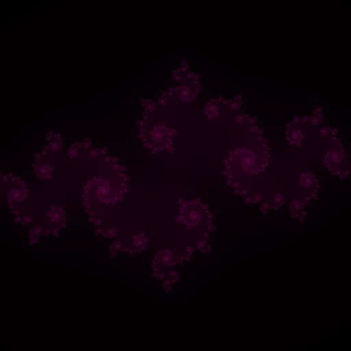
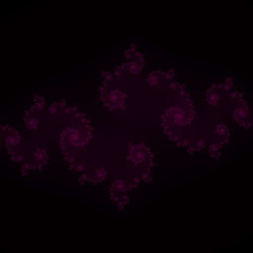

About Me
I am currently studying an HND in Videogame Programming at ESAT, where I am learning to program video games and develop interactive simulations.
Before focusing on programming, I worked for several years in hospitality, where I developed skills such as teamwork, problem-solving, and working under pressure.
Additionally, I am a Higher Technician in Automotive Engineering and had the opportunity to do an internship for 3 months with a competitive team, which taught me discipline and the importance of attention to detail in complex systems.
I am proficient in languages such as C, C++, ARM Assembler and some Python, and I am familiar with game engines like Unity and Unreal Engine 5. I have also worked with version control tools like Git and Perforce and have experience with debugging and optimizing code for real-time applications.
During my studies, I have worked on two major projects that helped me develop and strengthen my skills in game development. The first project was a video game, which I worked on as part of a team composed of artists, programmers, and designers. This collaborative effort allowed me to gain valuable experience in coordinating with different roles, implementing game mechanics, and optimizing performance.
The second project involved creating a graphics engine from scratch in C++, based on OpenGL. worked closely with a teammate on this project, where I applied my understanding of graphics programming to design and implement core features such as rendering, shading, and texture mapping. This project deepened my knowledge of low-level programming and the inner workings of game engines.
I thrive in collaborative environments, where I can work with others to solve complex problems. During my academic and professional life, I worked closely with engineers, designers and people with a wide variety of different profiles, which helped me improve my communication skills and ability to adapt to different work styles


 
